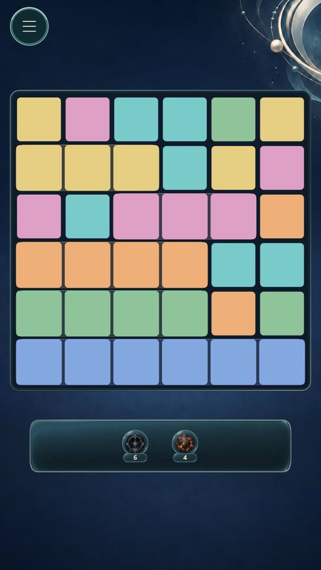
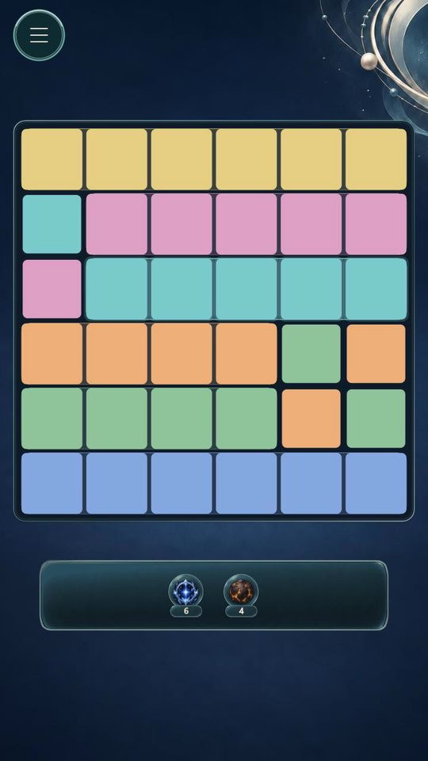

Tessecos归序 Tessecos
The world's first Move3 puzzle世界首款 Move3 益智游戏
Bring order to the board. Slide pieces until every horizontal row holds a single color; runs of three or more matching pieces move together.
从混乱中建立秩序。滑动棋子，将每一横行整理成同一种颜色；横向连续至少三枚同色棋子组成整体一起移动。
- 100 levelsBoards grow from 6×6 to 9×9, with a skippable introduction and new levels after 100.
- 100 个关卡棋盘从 6×6 扩展到 9×9，含可跳过的入门教学；第 100 关后继续挑战新关卡。
- Two modesNormal wraps at the edges, Hard keeps moved pieces inside; each keeps its own progress.
- 两种模式普通模式允许循环穿边，困难模式限制主动棋子越界，各自记录进度。
- Six toolsRewind, Bomb, Candle, Chain-breaker, Freeze and Flight unlock as you go.
- 六种道具时光回溯、炸弹、蜡烛、解链锤、冰冻与飞行，随进度解锁。
- Eight stylesA free Classic look plus optional premium themes.
- 八套外观经典外观免费，另有可选的精品主题。



Contact联系我们
Developer: Tessecos Studio开发团队：Tessecos Studio
Support email: 支持邮箱：tessecos@gmail.com